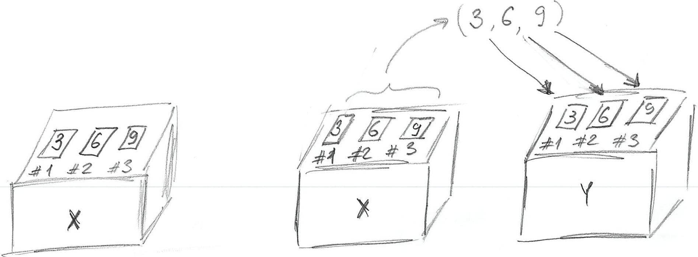

2 Vectors! Vectors everywhere!
Before reading the chapter, please download the exercise notebook (Alt+Click to download it or right-click as Save link as…), put it into your seminar project folder, and open the project. You need both the text and the notebook with exercises to be open, as you will be switching between them.
Before we can start using R for analysis, you need to learn about vectors. This is a key concept in R, so your understanding of it will determine how easy it will be for you to use R in general. Do all of the exercises and do not hesitate to ask me whenever something is unclear. Remember, you need to master vectors before you can master R!
2.1 Variables as boxes
In programming, a concept of a variable is often described as a box you can put something in. A box has a name tag on it, which is the name of the variable. Whatever you put in is the value that you store.
This “putting in” concepts is reflected in R syntax
number_of_participants <- 10Here, number_of_participants is the name of the variable (name tag for the box that we will be using), 10 is the value you store, and <- means “put 10 into variable number_of_participants”. If you know other programming languages, you probably expected the usual assignment operator =. Confusingly, you can use it in R as well, but there are some subtle, yet important, differences in how they operate behind the scenes. We will meet = again when we will be talking about functions and, in particular, Tidyverse way of doing things but for now only use <- operator!
2.2 Assignment statement in detail
One very important thing to remember about the assignment statement <variable> <- <value>: The right side is evaluated first until the final value is established and then, and only then, it is stored in a <variable> specified on the left side. This means that you can use the same variable on both sides. Take a look at the example
x <- 2
print(x)## [1] 2
x <- x + 5
print(x)## [1] 7We are storing value 2 in a variable x. In the next line, the right side is evaluated first. This means that the current value of x is substituted in its place on the right side: x + 5 becomes 2 + 5. This expression computed and we get 7. Now, that the right side is fully evaluated, the value can be stored in x replacing (overwriting) the original value it had.
R’s use of <- makes it easier to memorize this right side is fully evaluated first rule. However, as noted above, we will meet = operator and this one makes it look like a mathematical equation. However, assignments (storing values in a variable) have nothing in common with mathematical equations (finding values of variables to ensure equality)!
Do exercise 1.
2.3 Vectors and singluar values (scalars, which are also vectors)
The box metaphor you’ve just learned, doesn’t quite work for R. Historically, R was developed as a language for statistical computing, so it is based on concepts of linear algebra instead of being a “normal” programming language like Python or C. This means that there is no conceptual divide between single values and containers (arrays, lists, dictionaries, etc.) that hold many single values. Instead, the primary data unit in R is a vector. From computer science point of view, a vector is just a list of numbers (or some other values, as you will learn later). This means that there are no “single values” in R, there are only vectors of variable length. Special cases are vectors of length one, which are called scalars 8 (but they are still vectors) and zero length vectors that are, sort of, a Platonic idea of a vector without actual values. With respect to the “box metaphor”, this means that we always have a box with indexed (numbered) slots in it. A simple assignment makes sure that “the box” has as many slots as values you want to put in and stores these values one after another starting with slot #19. Therefore, the example above number_of_participants <- 10 creates a vector variable with one (1) slot and stores the value in it.
But, as noted above, a single value (vector with length of one) is a special case. More generally you write:
response <- c(1, 7, 3)Here, you create a variable (box) named response that has three slots in it because you want to store three values. You put values 1, 7, 3 into the slots #1, #2, and #3. The c(1, 7, 3) notation is how you create a vector in R by concatenating (or combining) values10. The figure below illustrates the idea:
Building on the box metaphor: If you can store something in a box, you can take it out! In the world of computers it works even better, because rather than taking something out, you just make a copy of that and store this copy somewhere else or to use it to compute things. Minimally, we would like to see what is inside of the box. For this, you can use print function:
## [1] 1 7 3Or, we can make a copy of values in one variable and store them in another:
## [1] 3 6 9
print(y)## [1] 3 6 9Here, we create a 3-slot variable x so that we can put in a vector of length 3 created via concatenation c(3, 6, 9). Next, we make a copy of these three values and store them in a different variable y. Importantly, the values in variable x stayed as they were. Take a look at the figure below, which graphically illustrate this:

Do exercise 2.
Remember, everything is a vector! This means that c(3, 6, 9) does not concatenate numbers, it concatenates three length one vectors (scalars) 3, 6, 9. Thus, concatenation works on longer vectors in exactly the same way:
## [1] 1 2 3 4 5Do exercise 3.
2.4 Vector indexes (subsetting)
A vector is an ordered list of values (box with some slots) and, sometimes, you need only one of the values. Each value (slot in the box) has its own index from 1 till N, where N is the length of the vector. To access that slot you use square brackets some_vector[index]. You can both get and set the value for the individual slots the same way you do it for the whole vector.
## [1] 1 4 3
# print only the third element
print(x[3])## [1] 3Do exercise 4.
Unfortunately, vector indexing in R behaves in a way that may11 catch you by surprise. Or, even worse, you will not even notice that your indexing does not work and screwed up your analysis. If your vector contains five values, you would expect that an index of 0 (negative indexes are special and will be discussed below) or above 5 generates an error. Not in R! Index of 0 is a special case and produces an empty vector (vector of zero length).
x <- c(1, 2, 3)
x[0]## numeric(0)If you try to get vector element using index that is larger than vector length (so 6 and above for a 5 element vector), R will return NA (“Not Available” / Missing Value).
x <- c(1, 2, 3)
x[5]## [1] NAIn both cases, it won’t generate an error or even warn you!
When setting a value by index, using 0 will produce no effect, because you are trying to put a value into a vector with no “slots”. Oddly enough, this will also generate neither an error nor a warning, so beware!
## [1] 1 2 3If you set an element with index larger than vector length, the vector will be automatically expanded to that length and all the elements between the old values and the new one will be NA (“Not Available” / Missing Value).
## [1] 1 2 3 NA NA NA NA NA NA 5This may sound too technical but I want you to learn about this because R conventions are so different from other programming languages and, also, from what you would intuitively expect. If you are not aware of these highly peculiar rules, you may never realize that your code is not working properly because, remember, you will never see an error or even a warning! It should also make you more cautious and careful when programming in R. It is a very powerful language that allows you to be very flexible and expressive. Unfortunately, that flexibility means that base R won’t stop you from shooting yourself in a foot. Even worse, sometimes you won’t even notice that your foot is bleeding because R won’t generate either errors or warnings, as in examples above. Good news is that things are far more restricted and consistent in Tidyverse.
Do exercise 5.
You can also use negative indexes. In that case, you exclude the value with that index and return or modify the rest12.
x <- c(1, 2, 3, 4, 5)
# this will return all elements but #3
x[-3] ## [1] 1 2 4 5
x <- c(1, 2, 3, 4, 5)
# this will assign new value (by repeating length one vector) to all elements but #2
x[-2] <- 10
x## [1] 10 2 10 10 10Given that negative indexing returns everything but the indexed value, what do you think will happen here?
x <- c(10, 20, 30, 40, 50)
x[-10]Do exercise 6.
Finally, somewhat counterintuitively, the entire vector is returned if you do not specify an index in the square brackets. Here, lack of index means “everything”.
x <- c(10, 20, 30, 40, 50)
x[]## [1] 10 20 30 40 502.5 Names as an Index
As you’ve just learned, every slot in vector has its numeric (integer) index. However, this number only indicates an index (position) of a slot but tells you nothing on how it is conceptually different from a slot with a different index. For example, if we are storing width and height in a vector, remembering their order may be tricky: was it box_size <- c(<width>, <depth>, <height>) or box_size <- c(<height>, <width>, <depth>)? Similarly, looking at box_size[1] tells that you are definitely using the first dimension but is it height or width (or depth)?
In R, you can use names to supplement numeric indexes. It allows you to add meaning to a particular vector index, something that becomes extremely important when we use it for tables. There are two ways to assign names to indexes, either when you are creating the index via c() function or, afterwards, via names() function.
To create named vector via c() you specify a name before each value as c(<name1> = <value1>, <name2> = <value2>, ...):
## width height depth
## 2 4 1Note the names appearing above each value. You can now use either numeric index or name to access the value.
## width
## 2
print(box_size["depth"])## depth
## 1Alternatively, you can use names() function to both get and set the names. The latter works via a very counterintuitive syntax names(<vector>) <- <vector-with-names>
## [1] 2 4 1## width height depth
## 2 4 1## [1] "width" "height" "depth"Because everything is a vector, names(<vector>) is also a vector, meaning that you can get or set just one element of it.
box_size <- c("width"=2, "height"=4, "depth"=1)
# modify SECOND name
names(box_size)[2] <- "HEIGHT"
print(box_size)## width HEIGHT depth
## 2 4 1Finally, if you use a name that is not in the index, this is like using numeric index larger than the vector length. Just as for out-of-range numeric index, there will be neither error nor warning and you will get an NA back.
## <NA>
## NADo exercise 7.
2.6 Slicing
So far we were reading or modifying either the whole vector or just one of its elements. However, the index you pass in square brackets (you’ve guessed it) is also a vector! Which means that you can construct a vector of indexes the same way you construct a vector of any values (the only restriction is that index values must integers and that you cannot mix negative and positive indexes).
## [1] 20 30 50When constructing a vector index, you can put index values in the order you require (normal ascending order, starting from the end of it, random order, etc.) or use the same index more than once.
## [1] 30 50 10 10 40You can also use several negative indexes to exclude multiple values and return the rest. Here, neither order nor duplicate indexes matter. Regardless of which value you exclude first or how many times you exclude it, you still get the rest of the vector in its default order.
## [1] 10 30 50Note that you cannot mix positive and negative indexes as R will generate an error (at last!).
## Error in x[c(-4, 2, -2)]: only 0's may be mixed with negative subscriptsFinally, including zero index makes no difference but generates neither an error nor a warning.
## [1] 10 50 20 20You can also use names instead of numeric indexes.
## height width
## 4 2However, you cannot mix numeric indexes and names. The reason is that a vector can hold only values of one type (more on that next time), so all numeric values will be converted to text (1 will become "1") and treated as names rather than indexes.
2.7 Colon Operator and Sequence Generation
To simplify vector indexing, R provides you with a shortcut to create a range of values. An expression A:B (a.k.a.Colon Operator) builds a sequence of integers starting with A and ending with and including(!) B13.
3:7## [1] 3 4 5 6 7Thus, you can use it to easily create an index and, because everything is a vector!, combine it with other values.
## [1] 10 30 40 50The sequence above is increasing but you can also use the colon operator to construct a decreasing one.
## [1] 50 40 30 20The colon operator is limited to sequences with steps of 1 (if end value is larger than the start value) or -1 (if end value is smaller than the start value). For more flexibility you can use Sequence Generation function: seq(from, to, by, length.out). The from and to are starting and ending values (just like in the colon operator) and you can specify either a step via by parameter (as, in “from A to B by C”) or via length.out parameter (how many values you want to generate, effectively by = ((to - from)/(length.out - 1)).
Using by version:
seq(1, 5, by = 2)## [1] 1 3 5Same sequence but using length.out version:
seq(1, 5, length.out = 3)## [1] 1 3 5You have probably spotted the = symbol. Here, it is not an assignment but is used to specify values of parameters when you call a function. Thus, we are still sticking with <- outside of the function calls but are using = inside the function calls.
Do exercise 8.
2.8 Working with two vectors of equal length
You can also use mathematical operations on several vectors. Here, vectors are matched element-wise. Thus, if you add two vectors of equal length, the first element of the first vector is added to the first element of the second vector, second element to second, etc.
## [1] 3 11 2Do exercise 9.
2.9 Working with two vectors of different length
What if vectors are of different length? Unfortunately, R has a solution and that is not an error or a warning. Rather, if the length of the longer vector is a multiple of the shorter vector length, the shorter vector is “recycled” , i.e., repeated N-times (where \(N = length(longer~vector) / length(shorter~vector)\)) and this length-matched vector is then used for the mathematical operation. Please note that this generate neither an error, nor a warning! This is another example of “convenience over safety” approach in R, so you should be very careful and always double-check length of your vectors. Otherwise, your code will work incorrectly and, if you are lucky, you might notice this.
To see how recycling works, take a look at the results of the following computation
## [1] 3 5 5 7 7 9Here, the values of y were repeated three times to match the length of x, so the actual computation was c(1, 2, 3, 4, 5, 6) + c(2, 3, 2, 3, 2, 3). A vector of length 1 (scalar) is a special case because any integer is a multiple of 1, so that single value is repeated length(longer_vector) times before the operation is performed.
x <- 1:6
y <- 2
print(x + y)## [1] 3 4 5 6 7 8Again, the actual computation is c(1, 2, 3, 4, 5, 6) + c(2, 2, 2, 2, 2, 2).
If the length of the longer vector is not a multiple of the shorter vector length, R will repeat the shorter vector N times, so that \(N = ceiling(length(longer~vector) / length(shorter~vector))\) (where ceiling() rounds a number up) and truncates (throws away) extra elements it does not need. Although R will do it, it will also issue a warning (yay!) about mismatching objects’ (vectors’) lengths.
## Warning in x + y: longer object length is not a multiple of shorter object
## length## [1] 3 4 3 4 3Finally, combining any vector with null length vector produces a null length vector14.
## numeric(0)One thing to keep in mind: R does this length-matching-via-vector-repetition automatically and shows a warning only if two lengths are not multiples of each other. This means that vectors will be matched by length even if that was not your plan. Imagine that your vector, which contains experimental condition (e.g. contrast of the stimulus), is about all ten blocks that participants performed but your vector with responses is, accidentally, only for block #1. R will silently(!) replicate the responses 10 times to match their length without ever(!) telling you about this. Thus, do make sure that your vectors are matched in their length, so that you are not caught surprised by this behavior (you can use function length() for this). Good news, it is much more strict in Tidyverse, which is designed to make shooting yourself in a foot much harder.
Do exercise 10.
2.10 Applying functions to a vector
Did I mention that everything is a vector? This means that when you are using a function, you are always applying it to a vector. This, in turn, means that you apply the function to all values in one go. For example, you can compute a cosine of all values in the vector.
## [1] 1.000000e+00 7.071068e-01 6.123032e-17 -1.000000e+00 -1.000000e+00In contrast, in Python or C you would need to loop over values and compute cosine for one value at a time (matrix-based NumPy library is a different story). Or think about Excel, where you need to extend formula over the rows but each row is computed independently (so you can deliberately or accidentally miss some rows). In R, because everything is the vector, the function is applied to every value automatically. Similarly, if you are using aggregating functions, such as mean() or max(), you can pass a vector and it will return a length-one vector with the value.
## [1] 4.52.11 Wrap up
By now you have learned more about vectors, vector indexing, and vector operations in R than you probably bargained for. Admittedly, not the most exciting topic. On top of that, there was not a single word on psychology or data analysis! However, R is obsessed with vectors (everything is a vector!) and understanding them will make it easier to understand lists (a polyamorous cousin of a vector), tables (special kind of lists made of vectors), and functional programming (on which R is built on). Finish this seminar by doing remaining exercises. Let’s see whether R can still surprise you!
Do exercises 11-17.